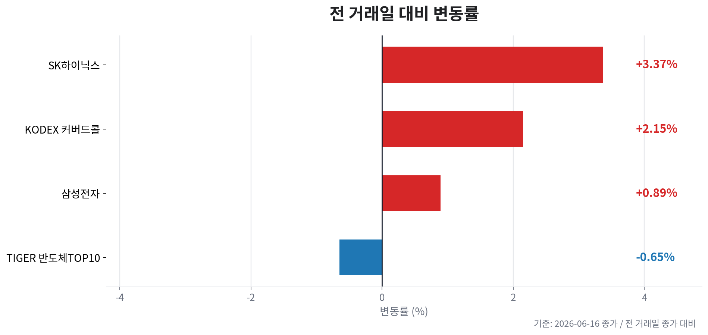
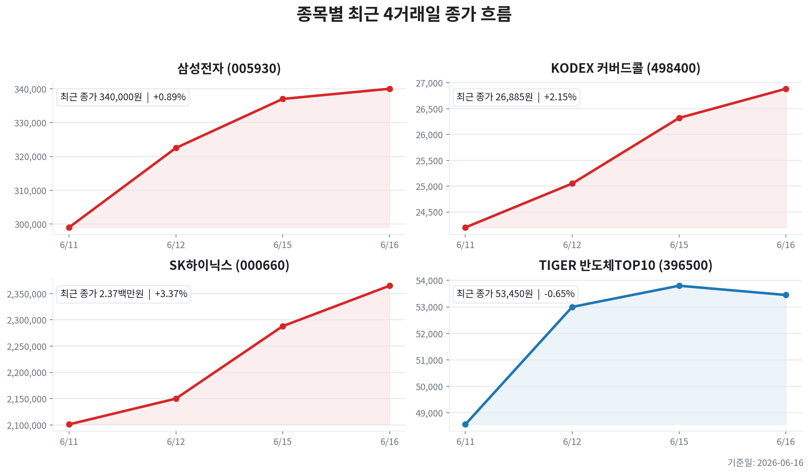

TIGER 반도체TOP10
오늘자 뉴스 0건
| 종목 | 티커 | 기준 가격 | 전 거래일 종가 | 등락 | 변동률 |
|---|---|---|---|---|---|
| TIGER 반도체TOP10 | 396500 | 53,450원 | 53,800원 | -350원 | -0.65% |
| KODEX 200타겟위클리커버드콜 | 498400 | 26,885원 | 26,320원 | +565원 | +2.15% |
| 삼성전자 | 005930 | 340,000원 | 337,000원 | +3,000원 | +0.89% |
| SK하이닉스 | 000660 | 2,365,000원 | 2,288,000원 | +77,000원 | +3.37% |



오늘의 핵심은 HBM 병목이 만든 메모리 쇼티지 기대가 국내 대형주 랠리를 얼마나 더 끌고 갈 수 있는지입니다. 6월 16일 09:31 KST 확인 기준 삼성전자는 339,500원(+0.74%), SK하이닉스는 2,362,000원(+3.23%), KODEX 반도체는 53,435원(-0.68%), TIGER 미국필라델피아반도체나스닥은 26,845원(+1.99%)으로 확인됐습니다.
전일 미국 반도체주는 SOXX +5.40%, 엔비디아 +3.54%, 마이크론 +10.84%로 강했고, 국내 뉴스 플로우도 HBM 병목, AI향 D램 쇼티지, 팹 증설과 소부장 순환매가 중심입니다. 다만 원/달러는 1,515.6원으로 재차 상승했고, 미국 10년물 4.47%, 30년물 4.97%는 여전히 높아 밸류에이션 확장에는 부담입니다.
현재 메모리 사이클은 공급 부족 → 가격 상승 → 실적 상향 → 주가 상승의 호황 중반 이후입니다. TrendForce는 DDR5 스팟 모멘텀이 이어지고 DDR4 타이트닝이 DDR3까지 번지고 있다고 보도했고, 5월 한국 반도체 수출은 물량 감소에도 DRAM·NAND 매출 증가가 강하게 나타났다는 흐름이 확인됐습니다.
| 변수 | 오늘의 해석 | 투자 시사점 |
|---|---|---|
| HBM | AI 서버와 빅테크 수요가 HBM 생산능력을 계속 잠식하며 병목이 지속 | SK하이닉스 프리미엄은 유지되지만 급등 후에는 가격보다 주문 지속성 확인이 중요 |
| DRAM | HBM 전환으로 범용·서버 DRAM 공급 여유가 줄고 DDR5 가격 모멘텀이 강화 | 삼성전자 후발 HBM 재평가와 범용 DRAM 가격 상승 수혜를 함께 점검 |
| NAND | 고단 NAND 로드맵과 수출 매출 회복 뉴스가 소부장·장비주까지 확산 | NAND는 HBM보다 순도가 낮아 실제 가격 반등과 재고 소진 속도를 확인 |
| CAPEX | 하반기 팹 증설·소부장 기대가 살아나지만 공급 확대는 다음 피크아웃의 선행 변수 | 장비·소재 순환매는 유효하되, 무차별 추격보다 수주와 마진 가시성을 선별 |
PER은 호황기 이익 추정치가 빠르게 올라가며 낮아 보이는 착시가 생길 수 있습니다. 따라서 단순 저PER보다 PBR 위치, HBM 가격 유지력, DRAM 계약가격 상승률, 신규 CAPEX가 실제 공급으로 전환되는 시점을 함께 봐야 합니다.
| 구분 | 삼성전자 | SK하이닉스 |
|---|---|---|
| 오늘 주가 | 339,500원(+0.74%)로 전일 급등 뒤 추가 상승 폭은 제한 | 2,362,000원(+3.23%)로 HBM 선도주 프리미엄이 계속 반영 |
| 이익 순도 | 메모리 회복, HBM 추격, NAND·파운드리·모바일이 섞인 복합 회복형 | HBM·서버 DRAM 민감도가 높아 AI 메모리 사이클 순도 우위 |
| 모멘텀 | 글로벌 전략회의, AX·HBM·파운드리 로드맵 점검, 저평가 해소 기대 | DRAM·NAND 로드맵, HBM 공급능력, 미국 상장 가능성 관련 뉴스가 관심 |
| 리스크 | HBM 고객 인증과 파운드리 수주가 기대에 못 미치면 재평가 지연 | 주가 급등, 고객 집중도, HBM 가격 피크아웃 논의가 변동성 요인 |
SK하이닉스는 현재 사이클의 순도와 가격 결정력이 가장 높지만, 좋은 뉴스가 주가에 빠르게 반영되는 만큼 수급 둔화 시 조정 폭도 커질 수 있습니다. 삼성전자는 HBM 후발 인증과 파운드리·NAND 회복이 확인될 경우 탄력은 크지만, 아직은 기대와 실적 확인 사이의 간극을 관리해야 합니다.
| 매크로 변수 | 현재 수치/뉴스 | 해석 |
|---|---|---|
| 환율 | 원/달러 1,515.6원, 전일 대비 +0.40% | 수출주 이익 환산에는 우호적이나 외국인 수급에는 단기 부담 |
| 금리 | 미 10년물 4.47%, 30년물 4.97% | AI 성장주 밸류에이션 확장에는 부담이 남아 있음 |
| 유가 | WTI 81.34달러(-4.17%), 브렌트 83.68달러(-4.18%) | 인플레이션 부담은 완화됐지만 지정학 리스크 프리미엄은 계속 점검 |
| 해외 반도체 | SOXX +5.40%, 마이크론 +10.84%, 엔비디아 +3.54% | 미국발 AI 메모리 랠리가 국내 대형주 심리를 지지 |
| 정책/규제 | 미·중 AI칩 갈등과 AI 모델 접근 제한 뉴스가 지속 | 고성능 메모리 수요에는 우호적일 수 있으나 중국 노출 기업에는 정책 리스크 |
전쟁 우려 완화와 미국 기술주 강세는 위험자산 선호에 긍정적입니다. 그러나 국내 지수와 반도체 대형주가 단기간 급등했기 때문에 외국인·기관 순매수가 실제로 따라오는지, 장중 고점에서 거래대금이 유지되는지가 오늘의 핵심 확인 변수입니다.
오늘자 뉴스 0건
이 파일은 자동 생성 결과입니다. 투자 판단 전 원문 뉴스와 실시간 호가를 다시 확인하세요.